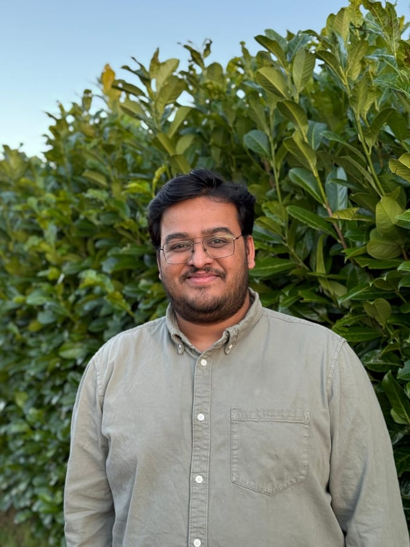

Technical Project Manager & Mechanical Engineer delivering industrial, manufacturing, and CAPEX projects across the UK and India.

A blend of engineering expertise, project planning mastery, and cross-functional leadership that drives programme performance.
Primavera P6, Microsoft Project, 3-tier scheduling (L1-L3), progress monitoring, baseline tracking, and float risk identification across 30+ work packages.
Site execution support, contractor coordination, utility integration, and live production environment management for CAPEX industrial projects.
KPI tracking, standardized dashboards, daily/weekly/monthly progress reports, and document control with 100% revision traceability.
Proactive risk identification, mitigation strategy development, structured change management, and recovery planning that saved ~3 weeks of slippage.
Cross-functional team coordination across 25 project team members and 15 contractors/subcontractors, client relationship management, and stakeholder communication in high-compliance environments.
AutoCAD 2D coordination, mechanical engineering fundamentals, ERP implementation analysis, and technical documentation across multiple project phases.
Supporting planning and controls on a £150M PepsiCo Greenfield facility, and delivered £3M+ in CAPEX sterilization plant projects at Revolution-ZERO.
Achieved 98% milestone compliance over 5 months at PepsiCo facility by developing and maintaining rigorous 3-tier schedules across 30+ work packages.
Reduced report generation time by 40% through standardized dashboards and automated progress measurement systems covering 200+ activities.
Supported sustainability-driven infrastructure at PepsiCo and contributed to process improvements in sterilization plant projects across the UK.
Quotes from LinkedIn recommendations, shared with permission.
"I had the pleasure of working with Aditya, who played a key role in our organisation as Technical Project Manager. Aditya brought clarity, structure and solution-focused collaboration to complex projects and consistently delivered long-lasting results. He is a standout project manager, and I wouldn't hesitate to recommend him."
Grace Sowden
Senior Project Manager, Revolution-ZERO
"Aditya is a great project manager. He is highly professional and target orientated. His high levelled communication skills and his kindness were highly appreciated in the team. He is a great project team leader and supports team if needed. It was a pleasure to work with Aditya and I can highly recommend him as an employee."
Petra Kreuzeder
Direct manager, Revolution-ZERO
"I am writing to recommend Aditya Abhyankar. I have worked with Aditya at Revolution-ZERO, a B-Corp certified provider of reusable medical textiles. I am happy to state that Aditya has been a pleasure to work with, he is an excellent Project Manager. He dealt with a very complex project build admirably gaining plaudits from colleagues with way more experience in the field. Moreover Aditya is a well liked member of the team with an excellent attendance record."
Paul Broadberry
Country Manager UK/IRE/SA, IDEXX
"I have worked with Aditya for nearly two years, firstly as a Student Inclusion Consultant (SIC) and then as a Senior SIC. Aditya was promoted to the Senior SIC role after demonstrating his keen interest in the scheme and his enthusiasm to help develop it further. He has been a popular member of the Senior team and has been reliable, hardworking and professional throughout his time here.
He has been involved with many activities across the two years including presenting at a national student engagement conference (RAISE 2022), recruiting and interviewing other members of the SIC team, and researching and writing a range of reports.
His clear communication, attention to detail and innovative ideas have ensured he has been a key member of the University's first Senior SIC team. I think he would be a very strong addition to any team and I would happily recommend him."
Vicky Blacklock
Direct manager, Northumbria University
"I had the pleasure of working with Aditya at Revolution-ZERO. He is a dedicated and reliable colleague with a consistently positive attitude. His work ethic is excellent, and he has always been friendly and supportive team member. I would confidently recommend him to any company looking for a strong team contributor!"
Ridhima Singh
Colleague, Revolution-ZERO
"Aditya works excellently in a team. He communicates ideas and suggestions well and explains his thought process thoroughly. He can think outside the box to come up with innovative ideas and solutions. He is able to delegate work appropriately and work collectively towards shared goals."
Shola Hughes
Colleague, Northumbria University
Northumbria University, Newcastle upon Tyne, UK (2021–2023)
Graduated with 2:1 (Commendation) • Advanced Practice Semester with Merit • Dissertation: AI in Risk Management Practices (Score: 65)
Savitribai Phule Pune University, Pune, India (2020)
Graduated with Distinction • Strong foundation in mechanical design, manufacturing processes, and engineering principles.
Whether you need project planning expertise, technical coordination, or engineering leadership—I'm ready to deliver results.